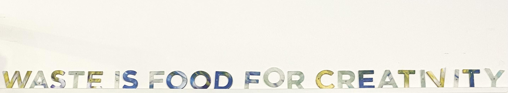

Amsterdam loopt flink achter met afvalscheiden!

Wist je dat er in Amsterdam maar slechts 32% afval wordt gescheiden, terwijl het landelijke gemiddelde al op 60% zit? Dat is een groot verschil en moet verbeterd worden!
Dit plan kunnen we waarmaken als we allemaal een steentje bijdragen. Bijvoorbeeld door een duurzaam initiatief zoals Wonder Wasteland te steunen!
Wonder Wasteland
Dit is een buurtlab in Amsterdam die gescheiden afval inzamelt en upcyclet naar nieuwe producten. Bij Wonder Wasteland bestaat afval eigenlijk niet!
Nieuwe Leven
Zij geven leven aan spullen die we anders weg zouden gooien. Het doel? Mensen zoals jij en ik bewuster maken over de waarde van onze afval, grondstoffen zoveel mogelijk hergebruiken en afvalscheiding verbeteren door het ietsjes leuker te maken voor ons. Benieuwd hoe dit precies werkt? Lees meer op de volgende pagina!